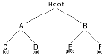

|
|
Backtracking is a form of recursion
The ususal scenario is that you are feced with a number of options, and you must chose one of these. after you make you
choice you will get a new set of options; just what set of options you get depends on what choice you made. this procedure is
repetaed over and over until you reach a final state. if you made a good sequence of choices, your final state is a goal state; if
you didn't, it isn't.
Conceptually, you start at the root of a tree; the tree probably has some good leaves and some bad leaves, though it may be that
the leaves are all good or all bad. you want to get to a good leaf. At each node, beginining with the root, you choose one of its
children to move to, and you keep this until you get to a leaf.
Suppose you get to a bad leaf. You can backtrack to continue the search for a good leaf by revoking your most recent choice,
and
trying out the next option in that set of options. If you run out of opptions, revoke the choice that got you here, and try
another
choice at that node. If you end up at the root with no options left, there are no good leaves to be found.
This needs an example.
In this example we draw a picture ofa tree.The trees is an abstract mode of thr possible sequence of choices we could
make. There is also a data structure called a tree, but usually we don't have a data structuer to tell us what choieces we
have. (If we do have an actual tree data structure, backtracking on it is called depth-first tree searching.)
boolean solve(Node n) {
if n is a leaf node {
if the leaf is a goal node, return true
else return false
} else {
for each child c of n {
if solve(c) succeeds, return true
}
return false
}
}
Notice that the algorithem is expressed as a boolean function. This is essential to understanding the algorithem. If
solve(n) is true, that means node n is part of solution--that is , node n is one of path from the root to
some goal node. We say that n is solvable. If solve(n) is false, then there is no path that includes n to any goal node.
Hence, to decide whether any non-leaf node n is solvable (part of a path a goal node), all you have to do is test whether any
child of n is solvable. This is done recursively, on each child of n. In the above code, this is done by the lines
for each child c of n {
if solve(c) succeeds, return true
}
return false Eventually the recursion will "bottom" out at a leaf node. If the leaf node is a goal node, it is solvable; if the leaf node is not a goal
if n is a leaf node {
if the leaf is a goal node, return true
else return false}The backtracking algorithem is simple but important. You should understand it thoroughly. Another way os stating it is as follows:To search a tree:
Back tracking is a rather typical recursive algorithem, and any recursive algorithem can be rewritten as a stack algorithem. in fact,
that is how youe recursive algorithems are translated into machine or assembly language.
boolean solve(Node n) {
put node n on the stack;
while the stack is not empty{
if the node at the top of the stack is a leaf {
if it is a goal node, return true
else pop it off the stack
}
else {
if the node at the top of the stack has untried children
push the next untried child onto the stackelse pop the node off the stack
}
return false
}
Starting from the root, the only nodes that can be pushed onto the stack are the children of the node currently on the top of theWhen the stack algorithem terminates successfully, the nodes on the stack from (in reverse order) a path from the root to a goal
node.
Similarly, when the recursive algorithem finds a goal node, the path information is emboided (in reverse order) in the sequence of
recursive calls. Thus as the recursion unwinds, the path can be recovered one node at a time, by(for instace) printing the node
at the current level, or sorting it in an array.
Here is the recursive backtracking algorithem, modified slightly to print (in reverse order) the nodes along the successful path:
boolean solve(Node n) {
if n is a laf node {
if the leaf is a goal node {
print n
return true
}
else return false
}
else {
for each child c of n {
if solve(c) succeeds {
print n
return true
}
}
return false
}
}
All of these versions of the backtracking algorithem are pretty simple, but when applies to a real problem, they can get pretty
cluttered up with details. Even determining whether the node is a leaf can be complex.
for example, if the pah represent a series of moves in a chess endgame problem, the leaves are the checkmate and stalemate
solutions.
To keep the program clean, therfore, tests like this should be buried in methods. In a chess game , for example, you could test
whether a node is a leaf by writing a ggameOver method (or you could even call it isLeaf). This method would encapsulate al;l the
ugly details of figuring out whether any possible moves remain.
Notice that the backtracking algorithem require us to keep track, for each node on the current path, which of its children have
been tried already (so we don't have to try them again). In the above code we made this look simple, by just saying for each child
c of n. In reality, it may be deficult to figure out what the possible children are, and there may be no obvious way to step through
them. In chess, foe example, a node can represent one arrangement of pieces on a chessboard, and each child that node can
represent the arrangement after some piece has made a legal move. How do you find these children, and how do you keep track
of which ones you've already examined
The most straightforword way to keep track of which children of the node have been tried is as follows: Upon initial entry to the
node (that is, when you first get there from above), make a list of all its childre. As you try each child, take it off the list. When
the list is empty, there are no remaining untried children, and you can return "failure". This is a simple approch, but it may require
quite a lot of additional work.
There is an easier way to keep track of which children have been tried, if you can define an ordering on the children if there is an
ordering, and you know which child you just trie, youcan determine which child to try next.
For example, youmight be able to number the children 1 through n, and try them in numerical order. Then, if you havejust tried
child k, you know that you have already tried children 1 through k-1, and you have not yet tried childrenk+1 throughn. Or, if yet
are trying to color a map with just four colors, yet can always try red first,then yellow,then green,then blue. If child yellow falls,
yellow can try child green next. If yopu are searching a maze, you can try choieces in the order left,straight,right(or perhaps
north,east,south,west).
it isn't always easy to find a simple way to order the children of a node. In the chss game eaxample, you might number your
pieces (or perhaps the squares of the board) and try them in numerical ofder , but in additional each piece may also have sevaral
moves, and these must also be ordered.
Example: Tree Search
For startes, let's do the simplest possible example of backtracking , which is searching an actual tree.We also use the
simplest kind of tree, a binary tree
A binary tree is a data structure composed of nodes. One node is designated as the root node can reference (point
to) zero, one, ot teo other nodes, which are called it's children. The children are refered to as the left child and the right child
All nodes are reachable(by one or more steps) from the root node , and there are no cycles. For our purpose, although this is not
part of the definition of a binary tree, we will say thst a node might or might not be a goal node, and will contain it's name . The
first example in this paper (which we reapeat here) shows a binary tree.
Here a definition of the Binary Tree class:
Public class Binary Tree {
Binary Tree leftChild=null;
Binary Tree rightChild=null;
boolean isGoalNode=false;
String name;
Binary Tree(String name, BinaryTree left,BinaryTree right,boolean isGoalNode){
this.name=name;
leftChild=left;
rightChild=right;
this.isGoalNode=isGoalNode;
}
}
Next we will create a TreeSearch class, and in it we will define a mwthod makeTree() which constructs the above binary tree.
Static BinartTree makeTree() {
BinaryTree root, a, b, c, d, e, f;
c=new BinartTree("C",null, null, false);
d=new BinartTree("D",null, null, false);
e=new BinartTree("E",null, null, false);
f=new BinartTree("F",null, null, false);
a=new BinartTree("A",c,d, false);
b=new BinartTree("B",e,f, false);
root=new BinartTree("Root",a,b,false);
return root;
}
Here's main program to create a binary tree and try to solve it:
public static void main(String args[]) {
BinaryTree tree = makeTree();
System.out.println(solvable(tree));
}
And finally, here's the recursive backtracking routine to "solve" the binary tree by finding a goal node.
static boolean solvable(BinartTree node) {
/*1*/ if (node == null) return false;
/*2*/ if (node.isGoalNode) return true;
/*3*/ if(solvable(node.leftChild)) return true;
/*4*/ if (solvable (node.rightChild )) return false;
/*5*/ return false;
}
Here's what the numbered lines are doing:
Each time we ask for another node, we have to check if it is null. In the above we put that check as the first thing in solvable. An
alternate would be to check first whether each child exists, and recur only if they do. Here's that alternative version.
static boolean solvable(BinartTree node) {
if (node.isGoalNode) return true;
if (node.leftChild != null && solvable(node.leftChild)) return true;
if (node.rightChild != null && solvable(node.rightChild)) return true;
return false;
}
I think the first version is simpler, but the second version is slightly more efficient.
one of the things that simplifies the above binary tree search is that, at each choice point, you can ignore all the previous
choices. previous choices don't give any information about what you should do next, as far as you known , both the left and the
right child are possible solutions. In many problems, however, you may be able to eliminate children immediately, without
recursion.
Consider, for example, the problem of four-colouring a map. It is a theroem of mathematics that any map on a plane, no matter
how convolutd the countries are, can be colored wih at most four colors, so that no teo countries that share a border are the
same color.
To color a map, you choose a color for the first country, then a color for the second country, and so on, until all the countries are
colored.
There are two ways to do this:
Let's apply each of these two methods to the problem of coloring a checkboard. This should be easily solvable, after all a
Checkboard anly needs two colors.
boolean okToColor(int row,int column,int color)
Used by method 2 to check , at a every node, whether the entire is an adjecent node already colored with the given color.
int[] nextRowAndColumn(int row, int column)
Used by both methods to find the next 'country'(actually, the row and column of the next square on the checkboard )
Here's the code for method 1.
boolean explore1(int row, int column, int color) {
if (row >= NUM-ROWS) return maplsOK();
map[row][column] = color;
for (int nextColor = RED; nextColor <= BLUE; nextColor++) {
int[] next = nextRowAndColumn(row,column);
if (explore1(next[0],next[1],nextColor)) return true;
}
return false;
}
And here's the code for method 2:
boolean explore2(int row,int column,int color) {
if(row >= NUM-ROWS)return true;
if (okToColor(row,column,color)) {
map[row][column] = color;
for (int nextColor = RED; nextColor <= BLUE; nextColor++) {
int[] next = nextRowAndColumn(row,column);
if (explore2(next[0], next[1], nextColor)) return true;
}
}
return false;
}
Those appear pretty similar, and you might think they are qually good. However, the timing information suggests otherwise:| 2 by 3 map | 3 by 3 map | 3 by 4 map | |
| Method 1: | 60 ms. | 940 ms. | 60530 ms.(1 minute) |
| Method 2: | 0 ms. | 0 ms. | 0 ms. |
Often our first try at a program doesn't work, and we need to debug it. Debuggers are helpful, but sometimes we need to fall
back on inserting print statements. There are some simple tricks to making effective use of print statements. These tricks can be
applied to any program, but are especially useful when you are trying to debug recursive routines.
Often, the best debugging technique is to print every method call and return (or at least the most important ones). You probably
want to print, for each method, what parameters it came in with, and what value it leaves with. However, if you just print a long
list of these, it's hard to match up method exits with their corresponding entries. Indenting to show the level of nesting can help.
Don't clutter up your actual code more than you must. Also, remember that code inserted for debugging purposes can itself
contain bugs, or (in the worst case) can affect the results, so be very careful with it.
Here's our debugging code. For this trivial program, there's almost more debugging code than actual code, but in larger programs
the proportions will be better.
static string indent ="";
static String name(BinaryTree node) {
if (node == null) return null;
else return node.name;
}
static void enter(BinaryTree node) {
System.out.println(indent + "Entering solvable(" + name(node) + ")");
indent = indent + "| ";
}
static boolean yes(BinaryTree node) {
indent = indent.substring(3);
System.out.println(indent + "solvable(" + name(node) + ") returns true");
return true;
}
static boolean no(BinaryTree node) {
indent = indent.substring(3);
System.out.println(indent + "solvable(" + name(node) + ") returns false");
return false;
}
To use this code, we modify solvable as follows:
static boolean solvable(BinaryTree node) {
enter(node);
if (node == null) return no(node);
if (node.isGoalNode) return yes(node);
if (solvable(node.leftChild)) return yes(node);
if (solvable(node.rightChild)) return yes(node);
return no(node);
}
And we get these results: Entering solvable(Root) | Entering solvable(A) | | Entering solvable(C) | | | Entering solvable(null) | | | solvable(null) returns false | | | Entering solvable(null) | | | solvable(null) returns false | | solvable(C) returns false | | Entering solvable(D) | | | Entering solvable(null) | | | solvable(null) returns false | | | Entering solvable(null) | | | solvable(null) returns false | | solvable(D) returns false | solvable(A) returns false | Entering solvable(B) | | Entering solvable(E) | | solvable(E) returns true | solvable(B) returns true solvable (Root) returns true true
Writing debugging statements is programming, too. Often it's as much work to debug the debugging statements as it is to debug
the actual program. Once your program is working, why throw this code away?
Obviously, you don't want to print out all this debugging information from a program you are ready to submit (or to turn over to
your manager). You could comment out your debugging calls, but that can be a lot of work. What's more, in the above example,
you would have to replace every return(yes(node)) with return(true), and every return(no(node)) with return(false). With all these
changes, you might introduce new bugs into your program.
simple solution is to make your debugging statements conditional. For example,
static final boolean debugging = false;
static void enter(BinaryTree node) {
if (debugging) {
System.out.println(indent + "Entering solvable(" + name(node) + ")");
indent = indent + "| ";
}
}
static boolean yes(BinaryTree node) {
if (debugging) {
indent = indent.substring(3);
System.out.println(indent + "solvable(" + name(node) + ") returns true");
}
return true;
}
static boolean no(BinaryTree node) {
if (debugging) {
indent = indent.substring(3);
System.out.println(indent + "solvable(" + name(node) + ") returns false");
}
return false;
}
In industry, actual programs often have multiple flags to control different aspects of debugging. Don't worry too much aboutIf an Exception is thrown, you can get information about just where it happened by sending it the message
printStackTrace(PrintStream). Since an Exception is an object like any other, you can create and throw your own Exceptions.
However, Java programmers don't always realize that you can create an Exception without throwing it. For example, the following
code
new Exception("Checkpoint Charlie").printStackTrace(System.out);
will print out a message something like this, and the program will then continue normally. That is, the above code just acts like ajava.lang.Exception: Checkpoint Charlie at TreeSearch.solvable(TreeSearch.java:53) at TreeSearch.solvable(TreeSearch.java:57) at TreeSearch.main(TreeSearch.java:72) at __SHELL38.run(__SHELL38.java:16) at bluej.runtime.ExecServer.suspendExecution(Unknown Source)
I call the following puzzle "Cindy's puzzle" for historical reasons. You have some number n of black marbles and the same number
of white marbles, and you have a playing board which consists simply of a line of 2n+1 spaces to put the marbles in. Start with
the black marbles all at one end (say, the left), the white marbles all at the other end, and a free space in between.
|
|
The goal is to reverse the position of the marbles
|
|
The black marbles can only move to the right, and the white marbles can only move to the left (no backing up). At each move, a
marble can either:
| Starting Position: |
|
| Black moves ahead: |
|
| jumpes: |
|
| Black moves ahead: |
|
| Black jumps: |
|
| White moves ahead: |
|
| Stuck! |
The backtracking method is named solvableand returns a boolean. In solvable we shall need to check whether we are at a leaf,
which in this case means a position from which no further moves are possible. This isn't so easy.
Now to the program. The main program will initialize the board, and call a recursive backtracking routine to attempt to solve the
puzzle. The backtracking routine will either succeed and print out a winning path, or it will fail, and the main program will have to
print out the bad news.
The backtracking method is named solvableand returns a boolean. In solvable we shall need to check whether we are at a leaf,
which in this case means a position from which no further moves are possible. This isn't so easy.
Each possible move will result in a new board position, and these new board positions are the children of the current board
position. Hence to find the children of a node (that is, of a board position), we need only find the possible moves from that node.
Remember that it is also highly desirable to find an ordering on these possible moves.
Here it is time to stop and take thought. To make progress, we must analyze the game to some extent. Probably a number of
approaches would work, and what follows is based on the way I worked it out. If you were to program this puzzle, you might find
a different but equally valid approach.
First, notice that if a marble has a move, that move is unique: if it can move ahead one square, then it cannot jump.
If it can jump, it cannot move ahead one square. This suggests that, to find the possible moves, we might assign numbers to the marbles, and
check each marble in turn. When we have looked at all the marbles, we have looked at all the possible moves. This would require
having a table to keep track of where each marble is, or else somehow "marking" each marble with its number and searching the
board each time to find the marble we want. Neither alternative is very attractive.
Next, notice that for a given board position, each marble occupies a unique space. Hence, instead of talking about moving a
particular marble, we can talk about moving the marble in a particular space. If a move is possible from a given space, then that
must be the only move possible from that space, because if the marble in that space has a move, it is unique. There is a slight
complication because not every space contains a marble, but at least the spaces (unlike the marbles) stay in one place.
Now we have a simpler ordering of moves to use in our program. Just check, in order, the 2n+1 spaces of the board. For each
space, either zero or one moves is possible. With this understanding, we can write a boolean method canMove(int[] board, int
position) which determines whether a move is possible from a given position:
Along with canMove and makeMove, we are using methodspuzzleSolved And printBoard with meanings that
should be obvious.
boolean solvable(int[] board) {
if (puzzleSolved(board)) {
return true;
}
for (int position = 0; position < BOARD_SIZE; position++) {
if (canMove(board, position)) {
int[] newBoard = makeMove(board, position);
if (solvable(newBoard)) {
printBoard(newBoard);
return true;
}
}
}
return false;
}
Along with canMove and makeMove, we are using methods puzzleSolved And printBoard with meanings that should be obvious.
Here is some output from the program: